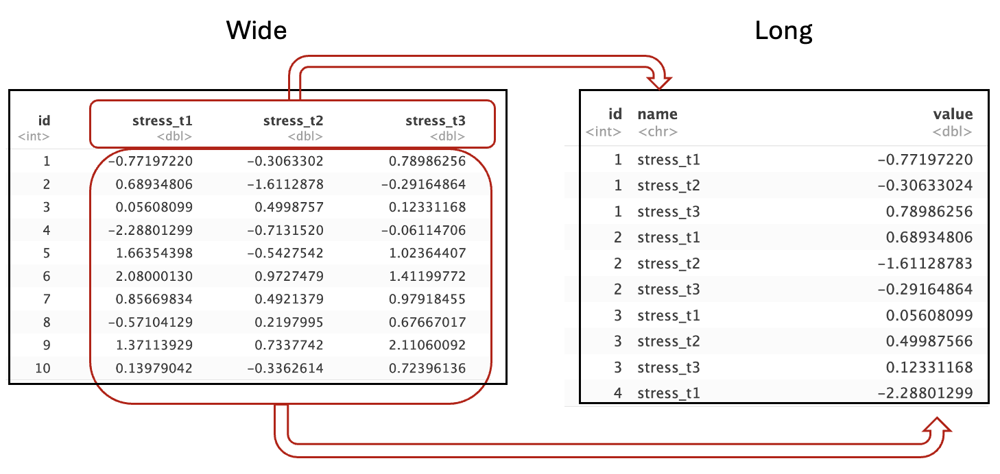
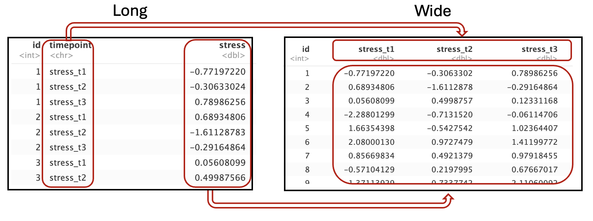

8 dplyr Teil 2
In diesem Abschnitt werden wir uns mit fortgeschrittenen Methoden des Data-wrangling beschäftigen. Insbesondere das umformatieren vom long- ins wide-Format und das Zusammenfügen (join) von unterschiedlichen Datensätzen.
8.0.1 Long vs. Wide – Format
In langen Datensätzen (Long-Format) steht jede Beobachtung in einer eigenen Zeile, auch wenn sie zur selben Person oder zum selben Objekt gehört.
In breiten Datensätzen (Wide-Format) dagegen befinden sich mehrere Beobachtungen einer Person in einer Zeile, verteilt auf verschiedene Spalten.
Was zunächst nach einer reinen Layoutfrage klingt, ist in der Datenanalyse tatsächlich sehr wichtig: Viele statistische Methoden und Visualisierungstools können nur mit einem bestimmten Format arbeiten.
Wer den Unterschied versteht, kann Datensätze gezielt umstrukturieren – und damit Auswertung, Vergleich und Visualisierung erheblich vereinfachen.
8.0.2 Tidy Data
Das Konzept von tidy data (aufgeräumten Daten) stammt aus dem tidyverse, einem System von R-Paketen, das auf einheitliche Datenstrukturen setzt.
Ein Datensatz gilt als tidy, wenn er drei einfache Regeln erfüllt:
- jede Variable bildet eine Spalte
- jede Beobachtung bildet eine Zeile
- jeder Wert steht in einer eigenen Zelle
Nach diesem Prinzip sollten Datensätze idealerweise im Long-Format vorliegen.
Deshalb arbeiten Pakete wie dplyr, tidyr und ggplot2 besonders gut mit Daten in dieser Form – sie ermöglichen einen konsistenten und effizienten Analyseprozess.
8.0.3 Wide-Format
Schauen wir uns ein Beispiel für einen Datensatz im wide-Format an. Stellen Sie sich vor wir haben für 20 Personen Stresslevel mithile eines Fragebogens zu drei Messzeitpunkten (t1, t2, t3) erhoben. Der Datensatz könnte dann in etwa so aussehen:
set.seed(23)
n <- 10
data_wide <- data.frame("id" = 1:n,
"stress_t1" = rnorm(n, mean=0),
"stress_t2" = rnorm(n, mean=0.2),
"stress_t3" = rnorm(n, mean=0.4))
head(data_wide)## id stress_t1 stress_t2 stress_t3
## 1 1 0.1932123 0.41828845 1.2353912
## 2 2 -0.4346821 -0.84653534 -0.1660151
## 3 3 0.9132671 -0.08868865 1.1884194
## 4 4 1.7933881 0.68155029 -0.7659293
## 5 5 0.9966051 -1.01637643 -0.1308200
## 6 6 1.1074905 0.50813690 0.3989413Wir sehen also für jede Person eine VP-Nummer (id) und drei Variablen für die Stresslevel zu den unterschiedlichen Zeitpunkten. Achtung, im strengen Sinne ist dieser Datensatz nicht tidy, weil wir hier mehrere Beobachtungen pro Zeile haben (mehrere Werte für eine Person). Er ist also für Analysen im tidyverse u.U. nicht so gut geeignet. Schauen wir uns im Gegensatz dazu mal das long-Format an:
## # A tibble: 6 × 3
## id time stress
## <int> <chr> <dbl>
## 1 1 t1 0.193
## 2 1 t2 0.418
## 3 1 t3 1.24
## 4 2 t1 -0.435
## 5 2 t2 -0.847
## 6 2 t3 -0.166Wir sehen hier also eine neue Spalte time, die anzeigt, für welchen Zeitraum die entsprechende Zeile steht. In der ersten Zeile sehen wir also zum Beispiel die erste Person zum ersten Zeitpunkt und können unter stress sehen, wie hoch ihr Stresslevel zu diesem Zeitpunkt war. In der zweiten Zeile steht das Stresslevel für Person 1 zu Zeitpunkt t2, usw.
Diese Art der Datenformatierung wirkt am Anfang eher umständlicher als das wide-Format, hat allerdings sehr viele Vorteile und ist für die meisten weiteren Anwendungen leichter zu verarbeiten.
Es sollte nun klar sein, was der Unterschied zwischen long- und wide-Format ist. Im long-Format gibt es mehr Zeilen, jede Beobachtung hat ihre eigene, im wide-Format gibt es mehr Variablen, mehrere Beobachtungen werden in eine Zeile geschrieben.
In vielen Fällen fallen Daten in den unterschiedlichsten Formaten an, es ist also wichtig, Daten vom eine ins andere Format transformieren zu können. Wir wollen also beispielsweise einen Datensatz aus dem wide-Format ins long-Format transformieren. Dazu bietet das tidyverse zwei sehr praktische Funktionen:
pivot_longermacht Datensätze longpivot_widermacht Datensätze wide
8.1 Wide to Long
Fangen wir mit unserem wide-Format an. Wir sehen uns noch mal den Datensätz mit den Stresswerten an:
## id stress_t1 stress_t2 stress_t3
## 1 1 0.1932123 0.41828845 1.2353912
## 2 2 -0.4346821 -0.84653534 -0.1660151
## 3 3 0.9132671 -0.08868865 1.1884194
## 4 4 1.7933881 0.68155029 -0.7659293
## 5 5 0.9966051 -1.01637643 -0.1308200
## 6 6 1.1074905 0.50813690 0.3989413Bevor Sie sich den Code zum Transformieren anschauen, überlegen Sie kurz, was passieren müsste, damit dieser Datensatz lang wird. Man kann sich zum Beispiel vorstellen, dass die drei Variablennamen stress_t1, stress_t2 und stress_t3 in eine neue Spalte gepackt werden und alle Werte, die in den Spalten stehen in der richtigen Reihenfolge in eine weitere Spalte:

Damit die Zuordnung der Werte beibehalten wird, muss die Variableid nun jeden Wert wiederholen, also drei mal 1, dann drei mal 3 usw. Dadurch wird der Datensatz insgesamt wesentlich länger.
Genau das, was oben beschrieben wird, macht der Befehl pivot_longer für uns. Alles, was wir auswählen müssen, sind die Variablen, die wir in eine neue Spalte packen wollen:
## # A tibble: 6 × 3
## id name value
## <int> <chr> <dbl>
## 1 1 stress_t1 0.193
## 2 1 stress_t2 0.418
## 3 1 stress_t3 1.24
## 4 2 stress_t1 -0.435
## 5 2 stress_t2 -0.847
## 6 2 stress_t3 -0.166Die Bezeichnungen name und value werden automatisch vergeben, sind aber nicht besonders informativ. Deswegen ändern wir noch die Bezeichung, damit wir nachher noch wissen, was die einzelnen Variablen enthalten. Das können wir auch innerhalb des Befehls machen:
data_long <- data_wide %>%
pivot_longer(c(stress_t1, stress_t2, stress_t3),
names_to = 'timepoint',
values_to = 'stress')
head(data_long)## # A tibble: 6 × 3
## id timepoint stress
## <int> <chr> <dbl>
## 1 1 stress_t1 0.193
## 2 1 stress_t2 0.418
## 3 1 stress_t3 1.24
## 4 2 stress_t1 -0.435
## 5 2 stress_t2 -0.847
## 6 2 stress_t3 -0.1668.2 Long to Wide
Wir haben jetzt aus einem wide-Format ein long-Format gemacht. Schauen wir uns die umgekehrte Transformation an: von long zu wide. Bevor Sie sich den Code zum Transformieren anschauen, überlegen Sie kurz, was passieren müsste, damit dieser Datensatz wieder ins wide-Format kommt. Wir ziehen aus der Variable timepoint die Variablennamen für drei neue Variablen und füllen diese Variablen mit Werten aus der Variable stress:

In R können wir das die Funktion pivot_wider machen lassen. Diese Funktion braucht zwei essentielle Informationen: Aus welcher Variable sollen die Variablennamen genommen werden? Und: aus welcher Variable sollen die Werte für die neuen Variablen genommen werden? Wir können es uns in unserem Beispiel oben so vorstellen: Wir nehmen die Variable timepoint, ziehen daraus alle möglichen Werte (stress_t1, stress_t2 und stress_t3) und machen daraus wieder einzelne Variablen. Es ist aber noch unklar, woher die Werte für diese Variablen kommen sollen. Deshalb müssen wir noch angeben, dass sie aus der Variable stress gezogen werden sollen. In Code sieht das dann so aus:
## # A tibble: 6 × 4
## id stress_t1 stress_t2 stress_t3
## <int> <dbl> <dbl> <dbl>
## 1 1 0.193 0.418 1.24
## 2 2 -0.435 -0.847 -0.166
## 3 3 0.913 -0.0887 1.19
## 4 4 1.79 0.682 -0.766
## 5 5 0.997 -1.02 -0.131
## 6 6 1.11 0.508 0.399Tadaaa, wir sind wieder da, wo wir am Anfang waren.
8.2.1 Übungsaufgabe
Erstellen Sie den folgenden Datensatz und transformieren Sie ihn mit pivot_longer ins long-Format und anschließend mit pivot_wider wieder zurück ins wide-Format. Versuchen Sie sich klar zu machen, weshalb die Argumente (names_to, values_to bzw. names_from und values_from) so heißen wie sie heißen.
8.3 Key is key
Beim Transformieren ist es immer wichtig, eine Variable zu haben, die eine Zeile eindeutig identifiziert. Das heißt diese Variable ist für jede Zeile (in unserem wide-Format Beispiel eine Person) unterschiedlich. Diese Variable, in unserem Fall id, nennt man auch key,weil sie wie ein Schlüssel funktioniert: Sie öffnet den Zugang zu genau der richtigen Zeile in deinem Datensatz. Ein Key identifiziert eine Einheit eindeutig, zum Beispiel eine Person mit einer ID oder einen Zeitpunkt mit einer klaren Bezeichnung. Ohne so einen Schlüssel kann man beim Zusammenführen oder Ordnen von Daten ziemlich schnell den Überblick verlieren, weil man nie sicher wäre, welche Werte eigentlich zu wem gehören. Die key-Variable bringt uns zu unserem nächsten Thema: das Zusammenfügen von unterschiedlichen Datensätzen.
8.4 joins
Stellen Sie sich vor, wir haben in unserer Studie nicht nur die Stressdaten zu drei Zeitpunkten, sondern auch deren Ergebnisse in einem Statistiktest. Die Testdaten wurden allerdings auf einer anderen Plattform erhoben und sollen nun mit den Stressdaten zusammengefügt werden, um sie gemeinsam auszuwerten, z.B. um zu untersuchen, inwieweit Stress mit der Leistung in einem Test zusammenhängt. So sehen unsere Testergebnisse aus:
potential_outcomes <- c(1, 1.2, 1.7, 2, 2.3, 2.7, 3, 3.3, 3.7, 4)
df_statistik <- data.frame(id = 5:14,
testergebnis = sample(potential_outcomes,
size = 10,
replace=TRUE))
head(df_statistik)## id testergebnis
## 1 5 3.0
## 2 6 3.0
## 3 7 4.0
## 4 8 2.7
## 5 9 1.7
## 6 10 1.0Wie bekommen wir die Daten beider Datensätze in einen gemeinsamen Datensatz? Theoretisch müssten wir einen neuen Datensatz erstellen und für jede einzelne Person die Stresswerte eintragen und dann die entsprechenden Testergebnisse. Erfreulicherweise müssen wir das nicht händisch machen, sondern haben mehrere Funktionen, die genau das übernehmen, sogenannte joins.
8.4.1 full_join
Der full-join fügt zwei Datensätze so zusammen, dass alle Informationen aus Datensatz A und B enthalten bleiben. Wir müssen ihm nur sagen, welche Variable unser key ist, also die Beobachtungen eindeutig identifiziert. Wichtig, dass diese key-Variable in beiden Datensätzen vorhanden ist.
## id stress_t1 stress_t2 stress_t3 testergebnis
## 1 1 0.19321233 0.41828845 1.2353912 NA
## 2 2 -0.43468211 -0.84653534 -0.1660151 NA
## 3 3 0.91326710 -0.08868865 1.1884194 NA
## 4 4 1.79338809 0.68155029 -0.7659293 NA
## 5 5 0.99660511 -1.01637643 -0.1308200 3.0
## 6 6 1.10749049 0.50813690 0.3989413 3.0
## 7 7 -0.27808628 -0.32017831 -0.1125624 4.0
## 8 8 1.01920549 -0.24231380 1.6428675 2.7
## 9 9 0.04543718 -0.39931281 -0.2605829 1.7
## 10 10 1.57577959 1.49457783 0.5666242 1.0
## 11 11 NA NA NA 3.7
## 12 12 NA NA NA 4.0
## 13 13 NA NA NA 3.0
## 14 14 NA NA NA 3.7Führen Sie den Code selbst aus und schauen Sie sich den Datensatz data_joined genau an. Was fällt Ihnen auf?
Richtig, es gibt ein paar NA`s in den Testergebnissen und den Stresswerten. Das passiert, weil die IDs in beiden Datensätzen nicht identisch sind. Es gibt also Personen, die im ersten Datensatz vorkommen aber nicht im zweiten und andersherum.
In der Regel interessieren uns nur vollständige Daten, deshalb können wir die NA’s mit drop_na() entfernen. Wir erhalten also nur die Zeilen, die vollständig sind:
## id stress_t1 stress_t2 stress_t3 testergebnis
## 1 5 0.99660511 -1.0163764 -0.1308200 3.0
## 2 6 1.10749049 0.5081369 0.3989413 3.0
## 3 7 -0.27808628 -0.3201783 -0.1125624 4.0
## 4 8 1.01920549 -0.2423138 1.6428675 2.7
## 5 9 0.04543718 -0.3993128 -0.2605829 1.7
## 6 10 1.57577959 1.4945778 0.5666242 1.0Für dieses Vorgehen gibt es eine eigene Funktion, den inner_join:
## id stress_t1 stress_t2 stress_t3 testergebnis
## 1 5 0.99660511 -1.0163764 -0.1308200 3.0
## 2 6 1.10749049 0.5081369 0.3989413 3.0
## 3 7 -0.27808628 -0.3201783 -0.1125624 4.0
## 4 8 1.01920549 -0.2423138 1.6428675 2.7
## 5 9 0.04543718 -0.3993128 -0.2605829 1.7
## 6 10 1.57577959 1.4945778 0.5666242 1.0Hier bleibt nur die Information enthalten, die in beiden Datensätzen enthalten ist.
8.4.2 left_join und right_join
Angenommen, wir wollen auf jeden Fall die Stressdaten für alle Versuchspersonen untersuchen und für diejenigen, bei denen die Testergebnisse vorliegen, den Zusammenhang zwischen Stress und Testergebnis berechnen. Dann brauchen wir alle Informationen aus Datensatz A (data_wide), aber aus Datensatz B (df_statistik) nur die Personen, die auch in Datensatz A vorkommen. Wir nehmen also den Datensatz A und kleben die Daten aus Datensatz B dran. Datensatz A bleibt dabei so wie er ist, aus Datensatz B nehmen wir nur die Personen, die auch in A vorkommen.
In Code sieht das dann so aus:
## id stress_t1 stress_t2 stress_t3 testergebnis
## 1 1 0.19321233 0.41828845 1.2353912 NA
## 2 2 -0.43468211 -0.84653534 -0.1660151 NA
## 3 3 0.91326710 -0.08868865 1.1884194 NA
## 4 4 1.79338809 0.68155029 -0.7659293 NA
## 5 5 0.99660511 -1.01637643 -0.1308200 3.0
## 6 6 1.10749049 0.50813690 0.3989413 3.0
## 7 7 -0.27808628 -0.32017831 -0.1125624 4.0
## 8 8 1.01920549 -0.24231380 1.6428675 2.7
## 9 9 0.04543718 -0.39931281 -0.2605829 1.7
## 10 10 1.57577959 1.49457783 0.5666242 1.0Das ganze gibt es auch als right_join. Hier tauschen die Datensätze ihre Rollen:
## id stress_t1 stress_t2 stress_t3 testergebnis
## 1 5 0.99660511 -1.0163764 -0.1308200 3.0
## 2 6 1.10749049 0.5081369 0.3989413 3.0
## 3 7 -0.27808628 -0.3201783 -0.1125624 4.0
## 4 8 1.01920549 -0.2423138 1.6428675 2.7
## 5 9 0.04543718 -0.3993128 -0.2605829 1.7
## 6 10 1.57577959 1.4945778 0.5666242 1.0
## 7 11 NA NA NA 3.7
## 8 12 NA NA NA 4.0
## 9 13 NA NA NA 3.0
## 10 14 NA NA NA 3.78.5 Fallunterscheidung mit ifelse und case_when
Bei der Arbeit mit Daten entsteht häufig die Situation, dass Werte auf Grundlage bestimmter Bedingungen neu eingeteilt, klassifiziert oder zugeordnet werden sollen. Ob wir Messwerte in Kategorien einteilen, Indikatorvariablen erstellen oder komplexere Fallunterscheidungen treffen möchten: Bedingte Logik gehört zu den wichtigsten Werkzeugen im Data-Wrangling.
In dplyr stehen uns dafür vor allem zwei Funktionen zur Verfügung, die zwar ähnlich aussehen, aber unterschiedliche Stärken haben. Die erste ist ifelse(). Sie eignet sich besonders gut für einfache Entscheidungen, bei denen es nur zwei mögliche Ergebnisse gibt, also einen klassischen Wenn–dann–sonst-Fall. ifelse() prüft eine Bedingung und weist für jeden Eintrag einer Spalte entweder den Wert für “yes” oder für “no” zu. Diese Funktion ist vollständig vektorisiert, das bedeutet, sie verarbeitet alle Zeilen einer Spalte gleichzeitig.
Im folgenden Beispiel erzeugen wir eine neue Variable, die anzeigt, ob der Stresswert über 0.5 liegt (‘hoch’) oder darunter (‘niedrig’):
data_long <- data_long %>%
mutate(stress_cat = ifelse(stress > 0.5, 'hoch', 'niedrig'))
head(data_long)## # A tibble: 6 × 4
## id timepoint stress stress_cat
## <int> <chr> <dbl> <chr>
## 1 1 stress_t1 0.193 niedrig
## 2 1 stress_t2 0.418 niedrig
## 3 1 stress_t3 1.24 hoch
## 4 2 stress_t1 -0.435 niedrig
## 5 2 stress_t2 -0.847 niedrig
## 6 2 stress_t3 -0.166 niedrigWir können diese Funktion ifelse(stress > 0.5, 'hoch', 'niedrig') auch ausdrücken als: Wenn stress höher als 0.5, schreibe ‘hoch’, ansonsten ‘niedrig’.
Sobald jedoch mehr als zwei Fälle unterschieden werden sollen, wird ifelse() schnell unübersichtlich. Dafür gibt es die zweite Funktion: case_when(). Sie ermöglicht klar strukturiertes und gut lesbares Formulieren mehrerer Bedingungen nacheinander, ähnlich einer Reihe von if, else if und else. Gerade bei komplexeren Einteilungen sorgt case_when() dafür, dass der Code nachvollziehbar bleibt und sich später leichter erweitern lässt. Auch hier ist wichtig, dass alle Rückgabewerte denselben Datentyp haben und dass ein Auffangfall (TRUE ~ …) definiert wird, damit keine unbeabsichtigten NAs entstehen.
Im nächsten Beispiel teilen wir stress in drei Kategorien ein: niedrig, mittel und hoch. Die Schwellenwerte dienen nur der Veranschaulichung:
data_long <- data_long %>%
mutate(stress_cat = case_when(stress < -0.5 ~ "niedrig",
stress >= -0.5 & stress <= 0.5 ~ "mittel",
stress > 0.5 ~ "hoch",
TRUE ~ NA))
data_long %>%
head()## # A tibble: 6 × 4
## id timepoint stress stress_cat
## <int> <chr> <dbl> <chr>
## 1 1 stress_t1 0.193 mittel
## 2 1 stress_t2 0.418 mittel
## 3 1 stress_t3 1.24 hoch
## 4 2 stress_t1 -0.435 mittel
## 5 2 stress_t2 -0.847 niedrig
## 6 2 stress_t3 -0.166 mittelcase_when() eignet sich auch hervorragend für komplexere Bedingungen, bei denen mehrere Variablen gleichzeitig berücksichtigt werden sollen. Unten nutzen wir Stresswerte und Testergebnisse gemeinsam, um eine aussagekräftigere Kategorie zu erzeugen:
joined_long <- data_long %>%
inner_join(df_statistik, by = join_by(id))
joined_long <- joined_long %>%
mutate(stress_leistung = case_when(
stress > 0.5 & testergebnis >= 3 ~ "hoch Stress & gut",
stress > 0.5 & testergebnis < 3 ~ "hoch Stress & schwächer",
stress <= 0.5 & testergebnis >= 3 ~ "niedriger Stress & gut",
stress <= 0.5 & testergebnis < 3 ~ "niedriger Stress & schwächer",
TRUE ~ NA
))
joined_long %>%
head()## # A tibble: 6 × 6
## id timepoint stress stress_cat testergebnis
## <int> <chr> <dbl> <chr> <dbl>
## 1 5 stress_t1 0.997 hoch 3
## 2 5 stress_t2 -1.02 niedrig 3
## 3 5 stress_t3 -0.131 mittel 3
## 4 6 stress_t1 1.11 hoch 3
## 5 6 stress_t2 0.508 hoch 3
## 6 6 stress_t3 0.399 mittel 3
## # ℹ 1 more variable: stress_leistung <chr>